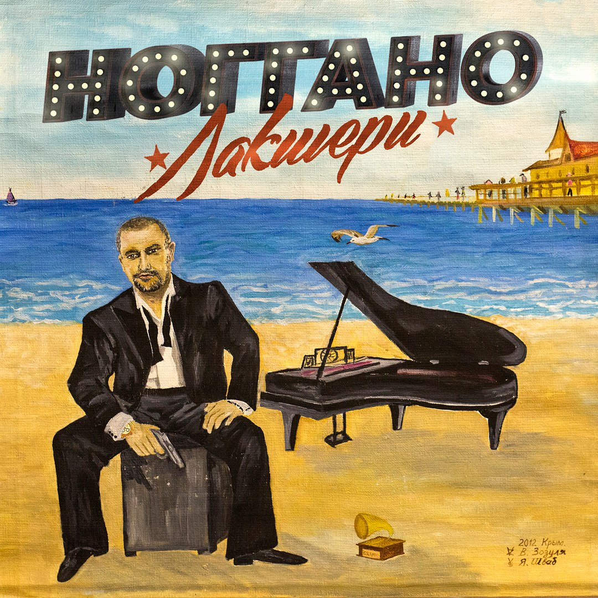
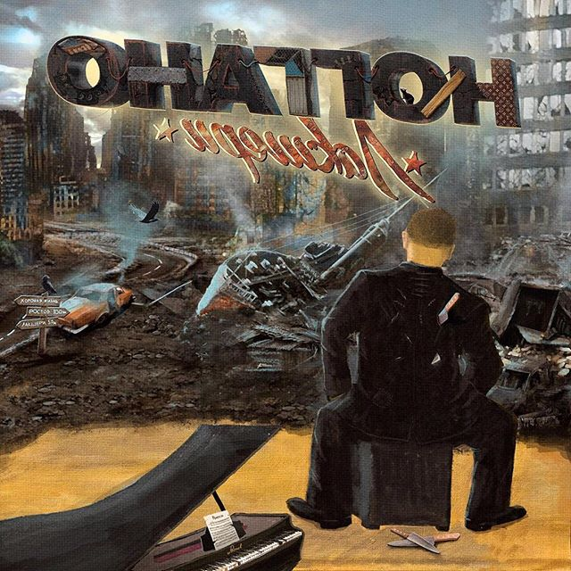

"Первый фольклорный герой нашего рэпа" — рецензия на альбом Ноггано "Лакшери"
Magnum opus самого народного из рэп-артистов сбивает с ног своим хронометражем — но не только им ОДНИМ
На момент своего появления проект Ноггано был, возможно, даже популярнее магистрального для Василия Вакуленко Басты. Сайд-проект от лица матершинника-хулигана открыл музыку артиста той части аудитории, которая не воспринимала эстрадные шлягеры вроде “Так плачет весна” или совместную с певицей Максим “Наше лето”. Это был абсолютный анти-Баста: мат, наркотики, улицы, черный юмор. Ограничившись двумя альбомами, Василий переключился на другие проекты, и возвращения грозы ростовских резерваций пришлось ждать долгих 7 лет, в ходе которых Баста превратился в одного из самых популярных музыкантов страны.
Если собрать релизы, выпущенные им в 2016 году (оба тома “Басты 5” и “Лакшери”), получится почти 60 песен — кто еще у нас на такую результативность способен?
Я восхищаюсь нерациональностью этого альбома. Любой продюсер, будь такой у Василия, завернул бы “Лакшери” еще на этапе обсуждения: “Сколько песен?! Ты Кремль дважды собрал, какой еще Ноггано? Ты на Первом канале в самом рейтинговом шоу страны, ну какое “барыгу долбить, так должно быть”?!”. “Лакшери” — еще один штрих к портрету Вакуленко-музыканта. Человека, постоянно мечущегося между душевным, назовем его так, поп-рэпом, танцевальной электроникой, каверами на Высоцкого, песнями про страховую фирму “Альбатрос” и медляками о школьных выпускных. Как автор он порывист и универсален (хотя, я бы попросту использовал эпитет “смел”). Вечно недоволен своим положением и вечно ищет новую вершину, на которую бы вскарабкаться. Поэтому, задавая вопрос: “Ну кто еще у нас на такое способен?”, имеется в виду вовсе не какой-то там раздутый треклист на три с половиной десятка песен, а музыкальный авантюризм, заставляющий рэп-музыканта вот уже больше десяти лет переть вперед и открывать все новые грани репертуара.


“Лакшери” — ироничное название, имеющее мало общего с шальным образом жизни, описанным на альбоме. Тут не роскошь, а кровь, пот, вонь, деготь и следы размельченных таблеток под ногтями.
Послушать “Лакшери” залпом — как посмотреть сезон сериала в один присест: голова болит, названия песен из памяти стерлись, но с героем столько всего успевает произойти! Ноггано крутит роман с участковой. Собака съедает пакет товара, доводя хозяина до паники. Неизвестные избавляют депутата от нескольких миллионов. Мать, приняв мескалин за таблетки от головы, берет в заложники сына. Три лба, оказавшись внутри милицейского бобика, делают так, чтобы машина до отделения не доехала. Вот такой, как выразится автор в одной из песен, “***** (убийственный) сторителлинг”.
В качестве не аттракционов, но песен лучше всего срабатывает алко-регги “Пьяница”, остроумный привет антинаркотическим инстанциям “Не кури марихуану” и “Стволок за поясок” — обрядовый нео-фолк meets кровавый гангста-рэп; ничего интереснее Вакуленко не писал очень давно.
К нему есть претензии как сочинителю (местами вода в текстах, местами переходы на прозу — что, правда, компенсируется серьезным цитатным потенциалом), а вот музыкально “Лакшери” звучит лакшери. Вакуленко — редкий для жанра композитор, свободно обращающийся с хип-хаусом, трип-хопом, джазом, фанком и трэпом. Благодаря этому каждая вторая песня альбома к концу превращается уже во что-то совсем другое, а неподъемный релиз, масштабностью и обложкой стремящийся походить на большое арт-высказывание, обретает легкость (насколько применимо это слово в отношении пластинки хронометражем в два с половиной часа).
Я тут подумал, что с проектом Ноггано автору удалось сделать то, что в русском рэпе не удавалось, кажется, никому. Придумать героя, вошедшего в фольклор, — эдакого Остапа Бендера в антураже лихих 90-х — и с авторской любовью и созерцательным юмором описывать выпадающие на долю этого бедолаги приключения.
Их и на одном “Лакшери” немало, а ведь вы и без меня вспомните Жору-пропажу, сватовство “Зятя” и анекдотичную “Армию”. За последние несколько десятилетий в российской культуре личность схожего масштаба появлялась разве что в фильме “Брат”. Только у Данилы нет фита с Pharaoh. Василий и тут впереди всех.